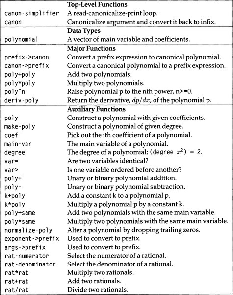

|
paip-ru
1
|
Меня всегда интересует все простое.
-David Hockney
Глава 8 началась с больших надежд: взять существующий сопоставитель с образцом, скопировать некоторые математические тождества из справочника и придумать пригодную для использования систему символьной алгебры. Получившаяся система была применима для некоторых целей, и она показала, что техника преобразования на основе правил является мощной. Однако проблемы раздел 8.5 показывают, что не все можно сделать легко и эффективно в рамках инструментария сопоставления с образцом на основе правил.
Существуют важные математические преобразования, которые трудно выразить с помощью подхода, основанного на правилах. Например, деление двух многочленов для получения частного и остатка - это задача, которую легче выразить в виде алгоритма или программы, чем правила или набора правил.
Кроме того, есть проблема с эффективностью. Части входных выражений снова и снова упрощаются, и много времени уходит на интерпретацию неприменимых правил. Раздел 9.6 показал некоторые методы ускорения программы в 100 раз при вводе примерно дюжины символов, но для выражений с примерно сотней символов такого ускорения недостаточно. Мы можем добиться большего, если спроектируем специализированное представление с нуля.
Программы серьезных алгебраических манипуляций обычно применяют понятие канонического упрощения. То есть выражения преобразуются в канонический внутренний формат, который может быть далек от формы ввода. Затем ими манипулируют и переводят обратно во внешнюю форму для вывода. Конечно, упрощатель, который у нас уже есть, в некоторой степени выполняет такой перевод. Он внутренне переводит (3 + x + -3 + y) в (+ x y), а затем выводит его как (x + y). Но каноническое представление должно обладать тем свойством, что любые два равных выражения имеют идентичные канонические формы. В нашей системе выражение (5 + y + x + -5) преобразуется во внутреннюю форму (+ y x), которая не идентична (+ x y), даже если эти два выражения равны. Таким образом, наша система не является канонической. Большинство проблем предыдущего раздела проистекают из отсутствия канонической формы.
Соблюдение канонической формы накладывает серьезные ограничения на представление. Например, x2- 1 и (x - 1) (x + 1) равны, поэтому они должны быть представлены одинаково. Один из способов гарантировать это - перемножить все факторы и собрать аналогичные термины. Итак, (x- 1)(x + 1) равно x2 - x + x - 1, что упрощается до x2 - 1 в любой канонической внутренней форме. Этот подход отлично работает для x2 - 1, но для такого выражения, как (x - 1) 1000, умножение всех факторов потребует много времени (и места). Трудно найти каноническую форму, идеально подходящую для всех задач. Лучшее, что мы можем сделать, это выбрать ту, которая хорошо подходит для проблем, с которыми мы, скорее всего, столкнемся.
В этом разделе мы сконцентрируемся на канонической форме для многочленов С математической точки зрения, многочлен - это функция (от одной или нескольких переменных), которую можно вычислить, используя только сложение и умножение. Мы будем говорить о основной переменной многочлена(полинома), коэффициентах и степени. В полиноме:
5xx3+bxx2+cxx+1
основная переменная x, степень равна 3 (наивысшая степень x), а коэффициенты равны 5, b, c и 1. Мы можем определить входной формат для полиномов следующим образом:
Однако формат ввода нельзя использовать в качестве канонической формы, потому что он допускает как (x + y), так и (y + x), а также 4 и (2 + 2).
Прежде чем рассматривать каноническую форму для многочленов, давайте посмотрим, почему многочлены были выбраны в качестве целевой области. Во-первых, существенно возрастает объем программирования, необходимый для поддержки канонических форм для более широкого класса выражений. Чтобы упростить задачу, мы устранили такие сложности, как функции log(логарифмические) и trig(тригонометрические). Многочлены - хороший выбор, потому что они замкнуты относительно сложения и умножения: сумма или произведение любых двух многочленов является многочленом. Если бы мы разрешили деление, результат не был бы замкнут, потому что частное двух многочленов не обязательно должно быть многочленом. В качестве бонуса многочлены также замыкаются при дифференцировании и интегрировании, поэтому мы также можем включить эти операторы.
Во-вторых, для достаточно больших классов выражений становится не просто сложно, но и невозможно определить каноническую форму. Это может показаться удивительным, и у нас нет места, чтобы объяснить, почему это так, но вот аргумент: подумайте, что бы произошло, если бы мы добавили достаточно функциональности, чтобы дублировать весь Лисп. Тогда "преобразование в каноническую форму" будет таким же, как "запуск программы". Но элементарным результатом теории вычислимости является то, что в общем случае невозможно определить результат выполнения произвольной программы (это известно как проблема остановки). Таким образом, неудивительно, что невозможно канонизировать сложные выражения.
Наша задача - преобразовать ранее определенный многочлен в некоторую каноническую форму. 1 Большая часть кода и некоторые комментарии к этому формату и процедурам для управления им были написаны Ричардом Фейтманом с некоторыми усовершенствованиями. пользователя Peter Klier.
Первое дизайнерское решение - предположить, что мы будем иметь дело в основном с плотными многочленами, а не с разреженными. То есть мы ожидаем, что большинство многочленов будут похожи на ax * 3 * + bx * 2 * + cx * + * d, не на ax * 100 * + bx * 50 + * c. Для плотных многочленов мы можем сэкономить место, представив основную переменную (x в этих примерах) и отдельные коэффициенты (a, b, c и d в этих примерах) явно, но представляя экспоненты только неявно , по позиции. Вместо списков будут использоваться векторы, чтобы сэкономить место и обеспечить быстрый доступ к любому элементу. Таким образом, представление 5 * x * 3 + 10 * x * 2 + 20 * x + * 30 будет вектором:
Основная переменная x находится в 0-м элементе вектора, а коэффициент при i -й степени x находится в элементе i + 1 вектора. Одиночная переменная представлена как вектор, первый коэффициент которого равен 1, а число представлено как само себя:
| []() | |
|---|---|
#(x 30 20 10 5) | represents 5*x*3 + 10*x*2 + 20*x* + 30 |
#(x 0 1) | represents x |
5 | represents 5 |
Тот факт, что число представлено самим собой, может вызвать путаницу. Число 5, например, является многочленом согласно нашему математическому определению многочленов. Но он представлен как 5, а не как вектор, поэтому (typep 5 'polynomial) будет ложным. Слово "многочлен" используется неоднозначно для обозначения как математической концепции, так и типа Лисп, но из контекста должно быть ясно, что имеется в виду.
Глоссарий программы канонического упрощения приведен на рисунок 15.1.
| []() |
|---|

|
| Рисунок 15.1: Глоссарий программы символьной манипуляции |
*(ed: should be a markdown table)*
Функции, определяющие тип polynomial-полинома, следуют ниже. Поскольку нас интересует эффективность, мы объявляем, что некоторые короткие функции компилируются inline-встроенно, используем конкретную функцию svref (simple-vector reference/ссылка на простой вектор), а не более общую aref, и предоставляем объявления для многочленов с использованием специальной формы the. Более подробная информация по вопросам эффективности приведена в Глава 9.
`var= var> poly make-poly))`
Нам пришлось принять еще одно дизайнерское решение при определении coef, функции для извлечения коэффициента из полинома. Как указано выше, i -ый коэффициент многочлена находится в элементе вектора i + 1. Если мы потребуем, чтобы вызывающий coef передал i + 1, чтобы получить i, мы могли бы сэкономить несколько операций сложения. Дизайнерское решение заключалось в том, что это будет слишком запутанным и подверженным ошибкам. Таким образом, coef ожидает передачи i и выполняет сложение самостоятельно.
В нашем формате мы будем настаивать на том, чтобы основные переменные были символами, а коэффициенты могли быть числами или другими многочленами. "Производственная" версия программы может учитывать основные переменные, такие как (sin x), а также другие сложности, такие как + и * с более чем двумя аргументами и нецелочисленными степенями.
Теперь мы можем извлекать информацию из многочлена, но нам также необходимо создавать и изменять многочлены. Функция poly принимает переменную и некоторые коэффициенты и строит вектор, представляющий многочлен. make-poly принимает переменную и степень и производит/создает многочлен со всеми нулевыми коэффициентами.
Многочлен можно изменить, установив его основную переменную или любой из его коэффициентов, используя следующие формы defsetf.
Функция poly конструирует многочлены аналогично list или vector: с явным списком содержимого, make-poly, с другой стороны, похожа на make-array: она создает многочлен заданного размера.
Мы предоставляем методы setf для изменения основной переменной и коэффициентов. Поскольку это первое использование defsetf, оно заслуживает некоторых пояснений. Форма defsetf принимает имя функции (или макроса), список аргументов и второй список аргументов, который должен состоять из одного аргумента, значения, которое должно быть присвоено. Тело формы - это выражение, в котором значение хранится в нужном месте. Таким образом, defsetf для main-var говорит, что (setf (main-varp) val) эквивалентно (setf (svref (the polynomial p) 0) val). defsetf очень похож на defmacro, но на писателя defsetf ложится немного меньше бремени. Вместо передачи p и val непосредственно методу setf, Common Lisp связывает локальные переменные с этими выражениями и передает эти переменные методу setf. Таким образом, писателю не нужно беспокоиться об вычислении выражений в неправильном порядке или неправильном количестве раз. Также возможно получить более точный контроль над всем процессом с помощью define-setf-method, как описано на стр. 884.
Функции poly+poly, poly*poly и poly^n выполняют сложение, умножение и возведение в степень многочленов соответственно. Они определены с несколькими вспомогательными функциями. k*poly умножает многочлен на константу,k, которая может быть числом или другим многочленом, не содержащим главной переменной многочлена p. poly*same используется для умножения двух многочленов на одну и ту же главную переменную. Кроме того, аналогичным целям служат функции k+poly и poly+same. Имея это в виду, вот функция для преобразования префикса в каноническую форму:
Она управляется данными и основана на свойстве prefix->canon каждого оператора. Далее мы устанавливаем соответствующие функции. Существующие функции poly*poly и poly^n можно использовать напрямую. Но другим операторам нужны интерфейсные функции. Операторам + и - нужны интерфейсные функции, которые обрабатывают как унарные, так и бинарные(двойные) данные.
Функция prefix->canon принимает входные данные, которые не были частью нашего определения многочленов: унарные операторы положительного и отрицательного значений, а также бинарные операторы вычитания и дифференцирования. Это допустимо, потому что все они могут быть сведены к элементарным операциям + и *.
Помните, что наши проблемы с канонической формой начались с неспособности решить, что проще: (+ x y) или (+ y x). В этой системе мы определяем каноническую форму, налагая порядок на переменные (мы используем алфавитный порядок, как определено string>). Правило состоит в том, что полином p может иметь коэффициенты, которые являются полиномами от переменной, расположенной позже в алфавите, чем основная переменная p, но не коэффициенты, которые являются полиномами от переменных, предшествующих основной переменной p. Вот как сравнивать переменные:
Каноническая форма переменной x будет #(x 0 1), что равно 0 x *x*0 + 1 x *x*1. Каноническая форма (+ x y) это #(x #(y 0 1) 1). Она не может быть #(y #(x 0 1) 1), потому что тогда полученный многочлен будет иметь коэффициент с меньшей основной переменной. Политика упорядочивания переменных обеспечивает каноничность за счет правильного группирования одинаковых переменных вместе и наложения определенного порядка на выражения, которые в противном случае были бы коммутативными.
Итак, вот код для сложения двух многочленов:
и код для умножения многочленов:
Сложная часть - это умножение двух многочленов на одну и ту же главную переменную. Это делается путем создания нового полинома, r, степень которого является суммой двух входных полиномов p и q. Первоначально все коэффициенты r равны нулю. Дважды вложенный цикл умножает каждый коэффициент p и q и добавляет результат к соответствующему коэффициенту r.
И poly+poly, и poly*poly используют функцию normalize-poly для "нормализации" результата. Идея состоит в том, что (- (^ 5) (^ x 5)) должен возвращать 0, а не #(x 0 0 0 0 0 0). Обратите внимание, что normalize-poly - это деструктивная операция: она вызывает delete, что может фактически изменить ее аргумент. Обычно это опасно, но поскольку normalize-poly заменяет что-то его концептуальным эквивалентом, никакого вреда не происходит.
Есть несколько незакрепленных концов, которые нужно исправить. Во-первых, функция возведения в степень:
"Raise polynomial p to the nth power, n>=0."
(check-type n (integer 0 *))
(cond ((= n 0) (assert (not (eql p 0))) 1)
`((integerp p) (expt p n))` `(t (poly*poly p (poly^n p (- n 1))))))`
Процедура дифференцирования проста, в основном потому, что нужно иметь дело только с двумя операторами (+ и \ *):
Упражнение 15.1 [h] Интегрировать многочлены не намного сложнее, чем их дифференцировать. Например:
∫ax2+bxdx=ax33+bx22+c.
Напишите функцию для интеграции многочленов и установите ее в prefix->canon.
Упражнение 15.2 [m] Добавьте поддержку определенных интегралов, таких как ∫abydx !!!(span) {:.hiddenClass}
. Вам нужно будет составить подходящую нотацию и правильно установить ее как в infix->prefix, так и в prefix->canon. Полная реализация этой функции должна рассматривать бесконечность как границу, а также проблему интегрирования по сингулярностям. Вам не нужно заниматься этими проблемами.
Остается только преобразовать каноническую форму обратно в префиксную, а оттуда обратно в инфиксную. Это хороший момент для расширения формы префикса, чтобы можно было использовать выражения с более чем двумя аргументами. Сначала мы показываем обновленную версию prefix->infix, которая обрабатывает несколько аргументов:
Теперь нам нужно только преобразовать из канонической формы в префикс:
Наконец, вот верхний уровень, чтобы все это использовать:
и пример его использования:
+ (210 * (X ^ 6)) + (252 * (X ^ 5)) + (210 * (X ^ 4))
+ (120 * (X ^ 3)) + (45 * (X ^ 2)) + (10 * X) + 1)
+ (420 * (X ^ 4)) + (90 * (X ^ 2)) + 2)
+ (240 * (X ^ 3)) + (20 * X))
В отличие от программы, основанной на правилах, эта версия дает правильные ответы на все вопросы. Программа не только правильная (по крайней мере, в этих примерах), она еще и быстрая. Мы можем сравнить его с каноническим упрощением, первоначально написанным для MACSYMA Уильямом Мартином (около 1968 г.) и модифицированным Ричардом Фейтманом. Модифицированная версия была использована Ричардом Габриэлем в его наборе тестов Common Lisp (1985). Программа тестирования называется frpoly, потому что она имеет дело с полиномами и изначально была написана на диалекте Franz Lisp. Тест frpoly кодирует многочлены в виде списков, а не векторов, и делает все возможное, чтобы быть эффективной. В остальном она похожа на используемые здесь алгоритмы (хотя сам код совершенно другой, в нем используются progs и gos и другие функциональности, которые пришли в немилость за прошедшие десятилетия). Конкретный тест, который мы будем использовать здесь, возводит 1 ***+** x + y + z* в 15-ю степень:
`(let ((r (prefix->canon'(+ 1 (+ x (+ y z))))))`
(time (poly^n r 15))
nil))
В нашей системе это занимает 0,97 секунды. Эквивалентный тест с исходным кодом frpoly занимает примерно такое же время: 0,98 секунды. Таким образом, наша программа работает так же быстро, как и код производственного качества. Что касается места для хранения, векторы используют примерно половину памяти, чем списки, потому что половина каждой cons-ячейки является указателем, а все векторы - это полезные данные. 2
Насколько быстрее код на основе полиномов, чем версия на основе правил? К сожалению, мы не можем ответить на этот вопрос напрямую. Мы можем время `(simp ' ( (1 + x + y + z) ^ 15)))`. Это занимает всего десятую долю секунды, но это потому, что он не выполняет никакой работы - ответ такой же, как и ввод! В качестве альтернативы, мы можем взять выражение, вычисленное с помощью (poly^n r 15), преобразовать его в префикс и передать это `для упрощения. Упрощение занимает 27,8 секунды, поэтому версия на основе правил работает намного медленнее. Раздел 9.6 описывает способы ускорения программы, основанной на правилах, а сравнение данных времени появляется на страница 525.
Когда дело доходит до измерения временных данных, всегда есть сюрпризы. Например, читатель предупреждений мог заметить, что версия poly^n, определенная выше, требует умножений на n. Обычно возведение в степень выполняется возведением в квадрат значения, когда показатель степени четный. Такой алгоритм использует только log n умножений вместо n. Мы можем добавить строку к определению poly^n, чтобы получить алгоритм O(log n):
"Raise polynomial p to the nth power, n>=0."
(check-type n (integer 0 *))
(cond ((= n 0) (assert (not (eql p 0))) 1)
`((integerp p) (expt p n))` `((evenp n) (poly^2 (poly^n p (/ n 2)))) ;***` `(t (poly*poly p (poly^n p (- n 1))))))`
Сюрприз в том, что возведение *r* в 15-ю степень занимает больше времени. Несмотря на то, что он выполняет меньше операций poly*poly, он выполняет их с более сложными аргументами, и в целом работы требуется больше. Если мы используем эту версию poly^n, то r15-test занимает 1,6 секунды вместо 0,98 секунды.
Кстати, это прекрасный пример концептуальной мощи рекурсивных функций. Мы взяли существующую функцию poly^n, добавили одно предложение cond и изменили алгоритм с O(n) на O(log n). (Это оказалось плохой идеей, но это не относится к делу. Было бы неплохо возводить целые числа в степени.) Рассуждения, позволяющие сделать это изменение, просты: во-первых, * pn * определенно равно (p**n/2)2, когда n четно, поэтому изменение не может привести к неправильным ответам. Во-вторых, изменение продолжает политику уменьшения n при каждом рекурсивном вызове, поэтому функция должна в конечном итоге завершиться (когда *n =* 0). Если она не дает неправильных ответов и завершается, значит, она должна дать правильный ответ.
Напротив, внести изменения в итерационный алгоритм более сложно. Первоначальный алгоритм прост:
(let ((result 1))
(loop repeat n do (setf result (poly*poly p result)))
result))
Но чтобы изменить его, мы должны изменить цикл повторения на цикл while, явно указать декремент n и вставить тест для четного случая:
(let ((result 1))
(loop while (> n 0)
do (if (evenp n)
`(setf p (poly^2 p)`
`n (/ n 2))`
`(setf result (poly*poly p result)`
`n (- n 1))))`
result))
Для этой проблемы ясно, что рекурсивное мышление приводит к более простой функции, которую легче изменить.
Оказывается, это не последнее слово. Возведение в степень многочленов может быть выполнено еще быстрее, с немного большей математической сложностью. Ричард Фейтман, 1974 статья о полиномиальном умножении анализирует сложность множества алгоритмов возведения в степень. Вместо обычного асимптотического анализа (например, O(n) or O(n*2)), он использует детальный анализ, который вычисляет постоянные коэффициенты (например, 1000 x *n or 2 x n*2). Такой анализ важен для малых значений *n. Оказывается, что для множества многочленов лучше всего подходит алгоритм возведения в степень, основанный на биномиальной теореме. Биномиальная теорема утверждает, что
a+bn=Σi=0nn!i!n-i!aibn-i
например,
a+b3=b3+3ab2+3a2b+a3
Мы можем использовать эту теорему, чтобы вычислить степень многочлена сразу, вместо того, чтобы вычислять ее многократным умножением или возведением в квадрат. Конечно, многочлен, как правило, представляет собой сумму более чем двух компонентов, поэтому мы должны решить, как разбить его на части a и b. Есть два очевидных способа: либо разделить многочлен пополам, чтобы a и b были одинакового размера, либо разделить по одному компоненту за раз. Фейтман показывает, что последний метод в большинстве случаев более эффективен. Другими словами, полином k1xn+k2xn-1+k3xn-2+... !!!(span) {:.hiddenClass}
будет рассматриваться как сумма a= k*1*xn и b - остальная часть многочлена.
Ниже приведен код для биномиального возведения в степень. Он несколько беспорядочен, потому что упор делается на эффективность. Это означает повторное использование некоторых данных и использование p-add-into! Вместо более общего poly+poly.
Использование этой версии poly^n, r15-test занимает всего 0,23 секунды, что в четыре раза быстрее, чем в предыдущей версии. В следующей таблице сравнивается время для r15-test с тремя версиями poly^n, а также время для применения simply к полиному r15 для различных версий simplify:
| program | secs | speed-up | |
|---|---|---|---|
| rule-based versions | |||
| 1 | original | 27.8 | - |
| 2 | memoization | 7.7 | 4 |
| 3 | memo+index | 4.0 | 7 |
| 4 | compilation only | 2.5 | 11 |
| 5 | memo+compilation | 1.9 | 15 |
| canonical versions | |||
| 6 | squaring poly^n | 1.6 | 17 |
| 7 | iterative poly^n | .98 | 28 |
| 8 | binomial poly^n | .23 | 120 |
Как мы уже отмечали ранее, общие методы (memoization)запоминания, индексации и компиляции значительно ускоряют работу. Однако в конечном итоге они не приводят к самой быстрой программе. Вместо этого самая быстрая версия была достигнута за счет отказа от исходной программы, основанной на правилах, замены ее программой, основанной на канонической форме, и тонкой настройки алгоритмов в этой программе с использованием математического анализа.
Теперь, когда мы создали достаточно быструю систему, в следующих двух разделах мы сосредоточимся на том, чтобы сделать ее более мощной.
Рациональное число определяется как дробь: частное двух целых чисел. Рациональное выражение определяется как отношение двух многочленов. В этом разделе представлена каноническая форма рациональных выражений.
Во-первых, число или многочлен будет по-прежнему представляться, как и раньше. Частное двух многочленов(полиномов) будет представлено как cons-ячейки пар - числитель и знаменатель. Однако так же, как Lisp автоматически приводит рациональные числа к простейшей форме (6/8 представлено как 3/4), мы должны сокращать рациональные выражения. Так, например, (x*2- 1)/(*x- 1) нужно сократить до x + 1, а не оставить как частное двух многочленов.
Следующие функции создают рациональные выражения и обращаются к ним, но не сводятся к простейшей форме, за исключением случая, когда знаменателем является число. Создание остальной функциональности для полноценного рационального выражения остается за серией упражнений:
**Упражнение 15.3 [s ** Измените prefix-> canon, чтобы принимать входные данные в форме x / y и возвращать рациональные выражения вместо многочленов. Также разрешите ввод формы x ^ - n.
Exercise 15.4 [m] Добавьте арифметические процедуры для умножения, сложения и деления рациональных выражений. Назовите их rat*rat, rat+rat, и rat/rat соответственно. Они будут вызывать poly*poly. poly+poly и новую функцию poly/poly, которая определена в следующем упражнении.
Упражнение 15.5 [h] Определите poly-gcd, которая вычисляет наибольший общий делитель двух многочленов.
Упражнение 15.6 [h] Используя poly-gcd, определите функцию poly/poly, которая будет реализовывать деление для многочленов. Многочлены замкныты для сложения и умножения, поэтому обе возвращают многочлены poly+poly и poly*poly. Многочлены не замкнуты для деления, поэтому poly/poly вернет рациональное выражение.
Теперь, когда мы можем делить многочлены, последний шаг - восстановить логарифмическую, экспоненциальную и тригонометрическую функции. Проблема в том, что если мы разрешим все эти функции, мы снова столкнемся с проблемами канонической формы. Например, следующие три выражения эквивалентны:
sinxcosx-π2eix-e-ix2i
Если нас интересует каноническая форма, безопаснее всего разрешить только e**x*** и log(*x). Все остальные функции могут быть определены в терминах этих двух. С помощью этого расширения набор выражений, которые мы можем формировать замыкание при дифференцировании, и можно канонизировать выражения. result - это математически обоснованная конструкция, известная как дифференцируемое поле. Это именно та конструкция, которую предполагает алгоритм интегрирования Риша (Risch 1969, 1979#bb0990)).
Недостатком этого минимального расширения является то, что ответы могут быть выражены незнакомыми терминами. Пользователь спрашивает d sin(x2)*/dx,* ожидая простого ответа в терминах cos, и с удивлением видит сложный ответ, включающий eix. Из-за этой проблемы большинство систем компьютерной алгебры сделали более радикальные расширения, допустив sin, cos и другие функции. Эти системы ступают по тонкому математическому льду. Алгоритмы, которые гарантированно работают с простым дифференцируемым полем, могут дать сбой при таком расширении области. В общем, результатом будет не неправильный ответ, а скорее невозможность найти ответ вообще.
A brief history of symbolic algebra systems is given in chapter 8. Fateman (1979), Martin and Fateman (1971), and Davenport et al. (1988) give more details on the MACSYMA system, on which this chapter is loosely based. Fateman (1991) discusses the frpoly benchmark and introduces the vector implementation used in this chapter.
Exercise 15.7 [h] Implement an extension of the rationals to include logarithmic, exponential, and trigonometrie functions.
Exercise 15.8 [m] Modify deriv to handle the extended rational expressions.
Exercise 15.9 [d] Adapt the integration routine from section 8.6 (page 252) to the rational expression representation. Davenport et al. 1988 may be useful.
Exercise 15.10 [s] Give several reasons why constant polynomials, like 3, are represented as integers rather than as vectors.
Answer 15.4
Answer 15.6
"Divide p by q: if d is the greatest common divisor of p and q
`then p/q = (p/d) / (q/d). Note if q-1. then p/q = p."`
(if (eql q 1)
`p`
`(let ((d (poly-gcd p q)))`
`(make-rat (poly/poly p d)`
`(poly/poly q d)))))`
Answer 15.10 (1) An integer takes less time and space to process. (2) Representing numbers as a polynomial would cause an infinite regress, because the coefficients would be numbers. (3) Unless a policy was decided upon, the representation would not be canonical, since #(x 3) and #(y 3) both represent 3.
1 In fact, the algebraic properties of polynomial arithmetic and its generalizations fit so well with ideas in data abstraction that an extended example (in Scheme) on this topic is provided in Structure and Interpretation of Computer Programs by Abelson and Sussman (see section 2.4.3, pages 153-166). We'll pursue a slightly different approach here. !!!(p) {:.ftnote1}
2 Note: systems that use "</tt>cdr-coding<tt>" take about the same space for lists that are allocated all at once as for vectors. But cdr-coding is losing favor as RISC chips replace microcoded processors. !!!(p) {:.ftnote1}
1.8.13